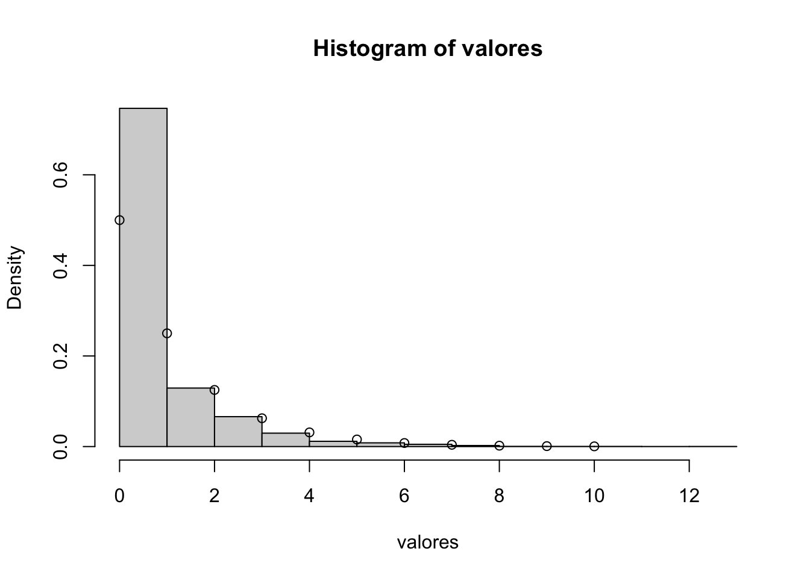
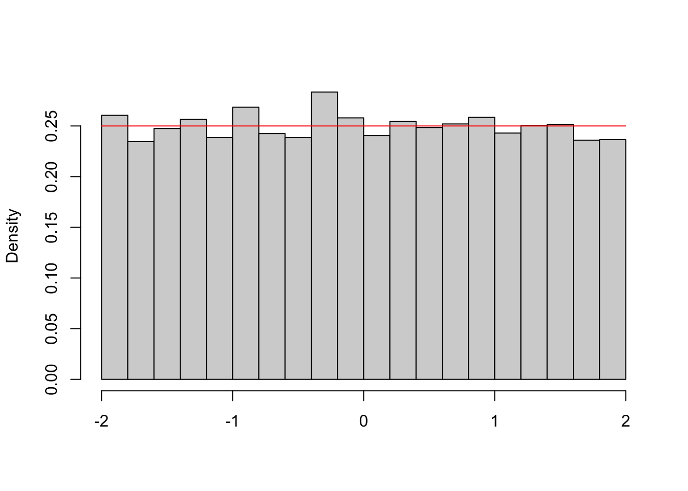
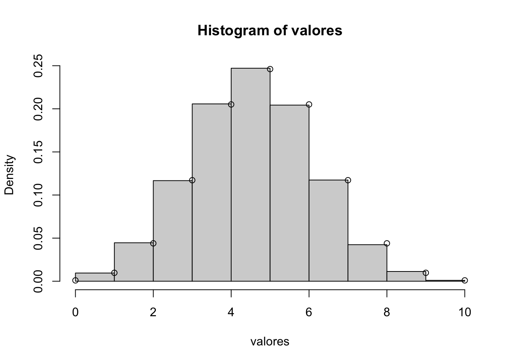

Capítulo 23 Método da transformada inversa
O método da transformada inversa é uma técnica fundamental na geração de variáveis aleatórias com distribuições específicas. Embora o R ofereça funções prontas para gerar números aleatórios de diversas distribuições, compreender e aplicar o método da transformada inversa é essencial em situações como:
- Distribuições Não Implementadas: Quando se lida com distribuições que não possuem funções dedicadas no R, o método da transformada inversa permite gerar amostras dessas distribuições a partir de números uniformemente distribuídos.
- Simulações Personalizadas: Em simulações que requerem distribuições específicas ou personalizadas, o método oferece flexibilidade para definir e gerar variáveis aleatórias conforme necessário.
- Fins Educacionais: Para estudantes e profissionais que desejam aprofundar-se nos fundamentos da geração de variáveis aleatórias, implementar o método manualmente proporciona uma compreensão mais profunda dos processos subjacentes.
23.1 Variável aleatória discreta
Este método é baseado no seguinte resultado.
Seja \(U\sim U(0,1)\). Para qualquer função de distribuição \(F\), a variável aleatória \(X\) definida por \[X = F^{-1}(U)\] possui distribuição \(F\), onde \[F^{-1}(u) = \inf\{x: F(x)\geq u\}\] é a inversa generalizada de \(F\). Além disso, segue que \(F(X)\sim U(0,1)\).
Este resultado afirma que podemos simular um valor de uma variável aleatória \(X\) (\(X\) com distribuição \(F\)) aplicando o seguinte algoritmo:
Algoritmo: método da transformação inversa
Entrada: invGF() # inversa generalizada de F
1 Gere um número aleatório u
2 Calcule x <- invGF(u)
Saída: xSuponha que queremos gerar o valor de uma variável aleatória discreta \(X\) com função massa de probabilidade \(P(X = x_{i}) = p_{i}\), \(i=0,1,\ldots\), \(\sum_{i}p_{i}=1\). Para isso, basta gerar um número aleatório \(U \sim U(0,1)\) e considerar: \[X = \begin{cases} x_{0},& \quad \text{se} \quad U<p_{0} \\ x_{1},& \quad \text{se} \quad p_{0}\leq U <p_{0}+p_{1}\\ \vdots& \\ x_{i},& \quad \text{se} \quad \sum_{j=0}^{i-1}p_{j}\leq U < \sum_{j=0}^{i}p_{j} \\ \vdots \end{cases}\]
Como, para \(0<a<b<1\), \(P(a\leq U<b)=b-a\), temos que \[P(X=x_{i}) = P\left( \sum_{j=0}^{i-1}p_{j} \leq U < \sum_{j=0}^{i}p_{j} \right) = p_{i.}\]
Se os \(x_{i}\), \(i\geq 0\), estão ordenados \(x_{0}<x_{1}<\cdots\) e se denotarmos por \(F\) a função de distribuição de \(X\), então \(F(x_{k})=\sum_{i=0}^{k}p_{i}\) e assim \[X = x_{i} \quad \text{se} \quad F(x_{i-1})\leq U < F(x_{i})\]
Em outras palavras, depois de gerar um número aleatório \(U\) nós determinamos o valor de \(X\) encontrando o intervalo \([F(x_{i-1}),F(x_{i})]\) no qual \(U\) pertence (ou, equivalentemente, encontrando a inversa de \(F(U)\)).
 Exemplo 1: Seja \(X\) uma variável
aleatória discreta tal que \(p_{1}=0.20\), \(p_{2}=0.15\), \(p_{3}=0.25\),
\(p_{4}=0.40\) onde \(p_{j}=P(X=j)\). Gere 10000 valores dessa variável
aleatória.
Exemplo 1: Seja \(X\) uma variável
aleatória discreta tal que \(p_{1}=0.20\), \(p_{2}=0.15\), \(p_{3}=0.25\),
\(p_{4}=0.40\) onde \(p_{j}=P(X=j)\). Gere 10000 valores dessa variável
aleatória.
Para a variável aleatória \(X\), a função de distribuição acumulada é dada pela soma cumulativa das probabilidades:
\[ F(x) = \begin{cases} 0, & \text{se } x < 1 \\ p_1, & \text{se } 1 \leq x < 2 \\ p_1 + p_2, & \text{se } 2 \leq x < 3 \\ p_1 + p_2 + p_3, & \text{se } 3 \leq x < 4 \\ 1, & \text{se } x \geq 4 \end{cases} \]
Com os valores fornecidos:
\[ F(x) = \begin{cases} 0, & \text{se } x < 1 \\ 0.20, & \text{se } 1 \leq x < 2 \\ 0.35, & \text{se } 2 \leq x < 3 \\ 0.60, & \text{se } 3 \leq x < 4 \\ 1, & \text{se } x \geq 4 \end{cases} \]
Gerar um número aleatório uniforme \(U\) no intervalo [0,1]. Para determinar o valor de \(X\) correspondente a \(U\):
- Se \(U <0.20\), então \(X=1\)
- Se \(0.20 \leq U < 0.35\), então \(X=2\)
- Se \(0.35\leq U < 0.60\), então \(X=3\)
- Se \(0.60 \leq U \leq 1\), então \(X=4\)
gerar_inversa <- function(){
u <- runif(1,0,1)
ifelse(u<0.20, return(1),
ifelse(u>=0.20 & u<0.35, return(2),
ifelse(u>=0.35 & u<0.60, return(3), return(4))))
}
valores <- replicate(10000, gerar_inversa())
table(valores)/10000## valores
## 1 2 3 4
## 0.1979 0.1561 0.2417 0.4043Exemplo 2: Seja \(X\) uma variável aleatória discreta assumindo os valores: \(1,2,\ldots,10\) com probabilidade \(1/10\) para \(x=1,2,\ldots,10\). Gerar 5000 valores dessa variável aleatória e representar graficamente.
gerar_va_inversa <- function(){
# Gerar número aleatório entre 0 e 1
u <- runif(1,0,1)
p <- 1/10 # primeira probabilidade P(X=1)
F <- p # inicializar a função de distribuição acumulada
X <- 1 # inicializar o valor da va X
while(u > F){
X <- X+1
F <- F+p
}
return(X)
}
valores <- replicate(5000,gerar_va_inversa())
barplot(table(valores)/5000)
Exemplo 3: Geração de uma variável aleatória com distribuição de Bernoulli. A variável aleatória \(X\) é de Bernoulli com parâmetro \(p\) se \[P(X = x) = \begin{cases} 1-p,& \quad \text{se} \quad x=0\\ p,& \quad \text{se} \quad x=1 \end{cases}\] Para gerar uma \(Bernoulli(p)\) podemos usar o seguinte algoritmo que é equivalente ao método da transformada inversa
- Gerar um número aleatório \(U\);
- Se \(U \leq p\) então \(X=1\) senão \(X=0\).
# Gerando uma variável aleatória com distribuição de Bernoulli(p)
gerar_bernoulli_inversa <- function(p){
U <- runif(1)
if (U <= p){
X <- 1
} else {
X <- 0
}
return(X)
}
valores <- replicate(100,gerar_bernoulli_inversa(0.8))
sum(valores)/100## [1] 0.75Exemplo 4: Gerar uma variável aleatória com distribuição \(Binomial(n,p)\). Aqui podemos usar o facto de que se \(X_{1},X_{2},\ldots,X_{n}\) são Bernoullis i.i.d., então \[X = X_{1}+X_{2}+\ldots+X_{n}\] é uma \(Binomial(n,p)\).
# Gerando uma variável aleatória com distribuição Binomial(n,p)
gerar_binomial_inversa <- function(n,p){
X <- sum(replicate(n,gerar_bernoulli_inversa(p)))
return(X)
}
valores <- replicate(10000,gerar_binomial_inversa(10,0.5))
hist(valores, freq = FALSE, breaks = 11)
points(0:10, dbinom(0:10,10,0.5))
Exemplo 5: Geração de uma variável aleatória com distribuição \(Geométrica(p)\). Seja \(X\sim Geometrica(p)\). Lembre que \[P(X=x)=p(1-p)^{x-1}\] e que \[F(x) = P(X\leq x) = \begin{cases} 0,& \quad \text{se} \quad x<1 \\ 1-(1-p)^x,& \quad \text{se} \quad x\geq 1\end{cases}\] O seguinte algoritmo é equivalente ao método da transformada inversa:
Gerar um número aleatório \(U\);
Fazer \(X = \lfloor ln(1-U)/ln(1-p)\rfloor\)
onde \(\lfloor \rfloor =\) maior inteiro.
# Gerar uma variável aleatória com distribuição Geométrica(p)
gerar_geometrica_inversa <- function(p){
U <- runif(1)
X <- ceiling(log(1-U)/log(1-p))-1
return(X)
}
valores <- replicate(10000, gerar_geometrica_inversa(0.5))
hist(valores, freq = FALSE)
points(0:10, dgeom(0:10,0.5))
Exemplo 6: Geração de uma variável aleatória com distribuição de Poisson. A variável aleatória \(X\) é de Poisson com média \(\lambda\) se \[p_{i} = P(X = i) = \frac{e^{-\lambda}\lambda^i}{i!}, \quad i=0,1,\ldots\]
A chave para usar o método da transformada inversa para gerar uma tal variável aleatória é dada pela seguinte identidade: \[p_{i+1}=\frac{\lambda}{i+1}p_{i}, \quad i\geq 0.\]
Ao utilizar a recursão acima para calcular as probabilidades de Poisson quando elas são necessárias, o algoritmo da transformada inversa para gerar uma variável aleatória de Poisson com média \(\lambda\) pode ser expresso da seguinte forma.
# Gerando uma va com distribuição de Poisson
lambda <- 3 # exemplo com lambda = 3
# Função para gerar uma variável aleatória de Poisson usando o método da transformada inversa
gerar_poisson_inversa <- function(lambda) {
U <- runif(1) # Gerar um número aleatório uniforme entre 0 e 1
p <- exp(-lambda) # Inicializar a primeira probabilidade P(X=0)
F <- p # Inicializar a função de distribuição acumulada (CDF)
X <- 0 # Inicializar o valor da variável aleatória
# Acumular probabilidades até que a CDF exceda U
while (U > F) {
X <- X + 1
p <- p * lambda / X # Atualizar a probabilidade P(X=k)
F <- F + p # Atualizar a CDF
}
return(X)
}
set.seed(123)
hist(replicate(10000,gerar_poisson_inversa(3)),freq = FALSE, breaks = 12)
points(0:10,dpois(0:10,3))
23.2 Exercícios
1. Considere uma variável aleatória \(X\) com a seguinte distribuição de probabilidades:
\[P(X = 1) = 0.2, \quad P(X = 2) = 0.5, \quad P(X = 3) = 0.3\]
Calcule a função de distribuição acumulada de \(X\).
Utilize o método da transformada inversa para gerar 1.000 amostras de \(X\).
Construa um gráfico de barras das amostras geradas e compare com as probabilidades teóricas.
2. Uma moeda viciada é tal que a probabilidade de cara (C) é 0.7 e a probabilidade de coroa (K) é 0.3.
Defina a função de distribuição acumulada para este experimento.
Utilize o método da transformada inversa para simular 500 lançamentos dessa moeda.
Calcule a proporção de caras e coroas nas simulações e compare com as probabilidades esperadas.
3. Considere uma variável aleatória \(X\) com a seguinte distribuição:
\[P(X = 1) = 0.1, \quad P(X = 2) = 0.3, \quad P(X = 3) = 0.4, \quad P(X = 4) = 0.2\] Gere 2000 amostras de \(X\) usando o método da transformada inversa e compare a distribuição empírica com a teórica.
4. Considere uma variável aleatória \(X\) com distribuição geométrica com parâmetro \(p = 0.2\). Isso significa que:
\[P(X = k) = (1 - p)^{k-1}p\] Fixando a semente em 1234, gere 1000 valores de \(X\) usando o método da transformada inversa.
Indique a proporção de valores simulados que são superiores à soma da média com o desvio padrão amostrais. Apresente o resultado com 4 casas decimais. Note que você terá que calcular a função de distribuição acumulada para \(X\).
23.3 Variável aleatória contínua
Uma variável aleatória \(X\) tem densidade \(f(x)=2x\), para \(0<x<1\), e 0, caso contrário. Suponha que queremos simular observações de \(X\). Nesta secção, apresentaremos um método simples e flexível para simulação de uma distribuição contínua.
Proposição: Suponha que \(X\) é uma variável aleatória com função de distribuição \(F\), onde \(F\) é invertível com função inversa \(F^{-1}\). Seja \(U\) uma variável aleatória uniforme \((0,1)\). Então a distribuição de \(F^{-1}(U)\) é igual a distribuição de \(X\), ou seja, a variável aleatória \(X\) definida por \(X=F^{-1}(U)\) tem distribuição \(F\).
A prova desta proposição é fácil e rápida. Precisamos mostrar que \(F^{-1}(U)\) tem a mesma distribuição que \(X\). Assim,
\[\begin{align*} P(X \leq x) &= P(F^{-1}(U)\leq x) = P(FF^{-1}(U) \leq F(x)) \\ &= P(U \leq F(x)) = P(0\leq U \leq F(x)) \\ &= F(x)-0 \\ &= F(x). \end{align*}\]
A última igualdade decorre do facto de que \(U\sim U(0,1)\) e \(0\leq F(x) \leq 1\).
Esta proposição mostra que se pode gerar uma variável aleatória \(X\) de uma função de distribuição contínua \(F\), gerando um número aleatório \(U\) e tomando \(X = F^{-1}(U)\).
Exemplo 1: Considere nossa varíavel aleatória \(X\) com densidade \(f(x)=2x\). A função de distribuição de \(X\) é \[F(x)=P(X\leq x)=\int_{0}^{x}2t\, dt = x^2, \quad \text{para} \quad 0<x<1.\]
A função \(F(x)=x^2\) é invertível no intervalo \((0,1)\) e \(F^{-1}(x)=\sqrt{x}\). O método da transformada inversa diz que se \(U\sim U(0,1)\), então \(F^{-1}(U)=\sqrt{U}\) tem a mesma distribuição que \(X\). Portanto, para simular \(X\), basta gerar \(\sqrt{U}\).
n <- 10000
set.seed(123)
simlist <- sqrt(runif(n))
hist(simlist, prob=T, main="", xlab="")
curve(2*x, 0,1, add=T)Exemplo 2: Geração de uma variável aleatória \(Uniforme(a,b)\). A geração é feita através de \[X = a+(b-a)U.\]
# Geração de uma va uniforme(-2,2)
a <- -2
b <- 2
n <- 10000
set.seed(123)
simlist <- a+(b-a)*runif(n)
hist(simlist, prob=T, main="",xlab="")
curve(dunif(x,a,b), col="red",add=TRUE)
Exemplo 3: Geração de uma variável aleatória exponencial. Seja \(X\) uma variável aleatória exponencial com taxa 1, então sua função de distribuição é dada por \[F(x)=1-e^{x}.\] Como \(0\leq F(x)\leq 1\), tomando \(F(x)=u\), onde \(u\sim U(0,1)\) tem-se: \[u=F(x)=1-e^{x}\] ou \[1-u=e^{-x}\] ou, aplicando o logaritmo \[x=-ln(1-u).\] Daí, pode-se gerar uma exponencial com parâmetro 1 gerando um número aleatório \(U\) e em seguida fazendo \[X = F^{-1}(U) = -ln(1-U).\] Uma pequena economia de tempo pode ser obtida ao notar que \(1-U\) também é uniforme em \((0,1)\), e assim, \(-ln(1-U)\) tem a mesma distribuição que \(-ln(U)\). Isto é, o logaritmo negativo de um número aleatório é exponencialmente distribuído com taxa 1.
Além disso, note que se \(X\) é uma exponencial com média 1, então para qualquer constante \(c\), \(cX\) é uma exponencial com média \(c\). Assim, uma variável aleatória exponencial \(X\) com taxa \(\lambda\) (média \(\frac{1}{\lambda}\)) pode ser gerada através da geração de um número aleatório \(U\) e fazendo \[X = -\frac{1}{\lambda}ln (U).\]
# Definir a sequência de valores x
x <- seq(0,3, by = 0.02)
# Definir o parâmetro lambda da distribuição exponencial
lambda <- 3
# Número de simulação
n <- 10000
# Simular valores de uma distribuição exponencial
set.seed(123)
simlist <- -log(runif(n))/lambda
# Plotar o histograma da simulação com a densidade de probabilidade
hist(simlist, probability = TRUE, main = "Comparação da Distribuição Exponencial Simulada e Teórica",
xlab = "Valores", ylab = "Densidade", col = "lightblue", border = "black")
# Adicionar a curva de densidade teórica
curve(dexp(x, rate = lambda), add = TRUE, col = "red", lwd = 2)
# Adicionar uma legenda
legend("topright", legend = c("Simulação", "Teórica"), col = c("lightblue", "red"), lwd = 2, fill = c("lightblue", NA))
23.4 Exercícios
1. Dada uma variável aleatória \(X\) com distribuição exponencial de parâmetro \(\lambda = 2\), use o Método da Transformada Inversa para gerar 1000 valores de \(X\) e visualize a distribuição com um histograma. Lembre que \(F_{X}(x) = 1-e^{-\lambda x}\) e mostre que \(X = -\frac{ln(1-u)}{\lambda}\).
2. Use o Método da Transformada Inversa para gerar 500 valores de uma variável aleatória \(X\) com distribuição uniforme no intervalo (2, 5). Lembre que a função de distribuição de uma uniforme \(U(a,b)\) é \(F_{X}(x) = \frac{x-a}{b-a}\). Mostre que \(X = a+u(b-a)\). Visualize a distribuição com um histograma e compare com a distribuição teórica.
3. Dada uma variável aleatória \(X\) com distribuição Cauchy, use o Método da Transformada Inversa para gerar 1000 valores de \(X\) com parâmteros 0 e 1. Lembre que \(F_{X}(x) = \frac{1}{\pi}arctan(\frac{x-x_0}{\gamma})+\frac{1}{2}\). Mostre que
\(X = x_0 + \gamma \, tan[\pi(u-0.5)]\). Visualize a distribuição com um histograma e compare com a distribuição teórica. Use dcauchy().
4. Seja \(X\) uma variável aleatória com distribuição \(W(\alpha, \beta)\). Assim a f.d.p de \(X\) é \[f(x) = \begin{cases} \alpha \beta^{-\alpha} x^{\alpha -1} e^{-(x/\beta)^\alpha},& \quad \text{se} \quad x>0 \\ 0,& \quad \text{se} \quad x\leq 0 \end{cases}\]
A função de distribuição de \(X\) é: \[F(x) = \int_{0}^{x}f(u)\, du = \begin{cases} 1-e^{-(x/\beta)^\alpha},& \quad \text{se} \quad x>0\\ 0,& \quad \text{se} \quad x\leq 0 \end{cases}\]
Mostre que \(X = \beta[-ln(U)]^{1/\alpha}\). Gere 10000 valores de uma
\(W(2,3)\). Visualize a distribuição com um histograma e compare com a distribuição teórica. Use dweibull().
5. Obtenha o gerador de números aleatórios das distribuições especificadas abaixo usando o método da transformada inversa
\(F(x) = 1-(x-1)^2, \quad 0<x<1\).
\(F(x) = x^{\theta}, \quad 0<x<1, \theta>1\).
\(F(x) = 1-exp(-x^2/2\tau^2), \quad x>0, \tau>0\).
\(f(x) = \frac{1}{2}sin(x), \quad 0<x<\pi\).
\(f(x) = \frac{sec^2(x)}{\sqrt{3}}, \quad 0<x<\pi/3\).
Soluções
\(F^{-1}(u) = 1-\sqrt{1-u}\) ou apenas \(F^{-1}(u)=1-\sqrt{u}\) por simetria.
\(F^{-1}(u) = u^{1/\theta}\).
\(F^{-1}(u) = \sqrt{-2\tau \cdot \log(1-u)}\).
\(F(x) = \frac{1-\cos(x)}{2}\) e \(F^{-1}(u)=arcos(1-2u)\).
\(F(x) = \frac{tan(x)}{\sqrt{3}}\) e \(F^{-1}(u) = arctan(u\sqrt3)\).
Quando usar o método da transformada inversa?
Sempre que possível.
O método funciona quando \(F^{-1}(u)\) existe.
Existem distribuições onde \(F(x)\) é não inversão analítica.
Existem distribuições onde \(F(x)\) não existe (apenas \(f(x)\)).
Alternativas
Pode-se aproximar numericamente \(F(x)\) e/ou \(F^{-1}(u)\) para gerador de número aleatório.
Pode-se considerar métodos não baseados em \(F^{-1}(u)\).